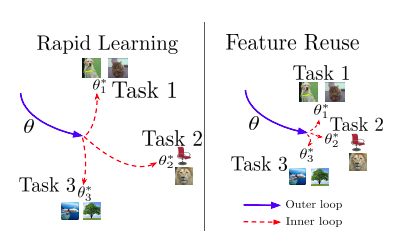
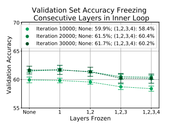
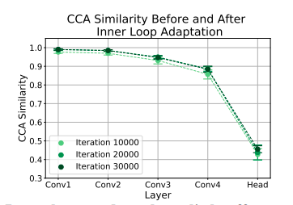
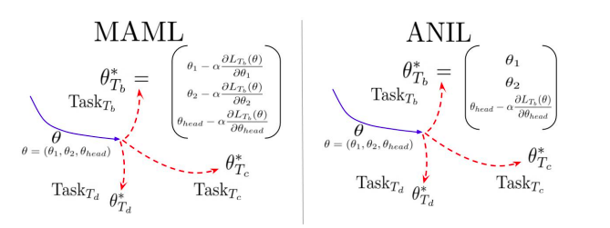

Paper Summary - Rapid Learning or Feature Reuse?
Posted on Mon 23 December 2019 in posts
In this post, we will go through a brief summary of this paper by Aniruddh Raghu, Maithra Raghu. Samy Bengio & Oriol Vinyals which came out in MetaLearn 2019 at NeurIPS.
The authors set out to understand the effectiveness of MAML by looking at the quality of the learnt meta-initialization.
- Rapid Learning: Is the learnt meta-initialization such that it is amenable to large, efficient changes given a new task at meta-test time?
OR
- Feature Reuse: Is the learnt meta-initialization already at a point in the feature space which is close to the optimum for a new task at meta-test time?

Conclusion
They conclude that feature reuse is the dominant factor and propose two modifications to MAML - Almost No Inner Loop (ANIL) & No Inner Loop (NIL).
Experiments
The final classifier layer of the network is referred to as the head and the rest of the layers are referred to as the body.
- The body is the same as the one used in the MAML paper, four blocks of 3x3 convolutions & 2x2 max-pooling.
- Contiguous subsets of the layers in the body of the network are frozen during the inner loop at meta-test time.
- The inner loop adaptation is still performed at meta-train time.

Observation 1:
- The validation accuracy with inner loop adaptation (no freezing) and without the inner loop adaptation (freezing) is compared at meta-test time.
- Almost identical performance is observed on MiniImageNet-5way-5shot.

Observation 2:
- Canonical Correlational Analysis (CCA)[1] similarity is used to compare the changes in representations of all layers.
- Apart from the head, the rest of the layers have a high CCA similarity score, implying that the body is not affected by the inner adaptation.
Almost No Inner Loop (ANIL)

- Based on the above observations, the authors remove the inner loop adaptation during both meta-train & meta-test time for the body of the network and propose ANIL.
- Inner loop adaptations for the head of the network for task-specific alignment. This is required as for each task, the final output neurons correspond to a different set of classes.
- ANIL matches the performance of MAML on both few shot classification and Reinforcement Learning tasks.
No Inner Loop (NIL)
- In order to do away with the inner loop adaptation for the head during meta-test time, the authors propose NIL.
- A meta-model is first learnt using ANIL.
- At meta-test time, the head is removed. The features for the support set are computed by passing it through the body of the network.
- For a data-point from the query set, cosine similarity is computed for each all data-points in the support set.
- The similarity scores are then used to weight the labels of the support set to get the prediction.
- This is done in the Matching Networks paper [2].
My Thoughts:
-
Does the dominance of the feature reuse paradigm imply that MAML might not work well for tasks which vary a lot from the training distriution? As mentioned in the conclusion, it will be interesting to conduct the same experiments on a more diverse set of datasets [3].
-
I felt that no experiments were conducted to test the rapid learning hypothesis. I'm not sure if feature reuse alone implies that rapid learning cannot happen. It'll be interesting to design experiments to test the rapid learning hypothesis.
Considering the loss surface as a mountainous landscape, I would imagine the meta-initialization as a boulder lying on a hill from which we can push it along different steep pathways corresponding to different tasks. But as it turns out, the hill is not very high :P
References:
[1] Maithra Raghu, Justin Gilmer, Jason Yosinski, and Jascha Sohl-Dickstein. Svcca: Singular vector canonical correlation analysis for deep learning dynamics and interpretability. In Advances in Neural Information Processing Systems, pages 6076–6085, 2017
[2] Oriol Vinyals, Charles Blundell, Timothy Lillicrap, Daan Wierstra, et al. Matching networks for one shot learning. In Advances in neural information processing systems, pages 3630–3638, 2016
[3] Eleni Triantafillou, Tyler Zhu, Vincent Dumoulin, Pascal Lamblin, Kelvin Xu, Ross Goroshin, Carles Gelada, Kevin Swersky, Pierre-Antoine Manzagol, and Hugo Larochelle. Meta-dataset: A dataset of datasets for learning to learn from few examples. arXiv preprint arXiv:1903.03096, 2019.